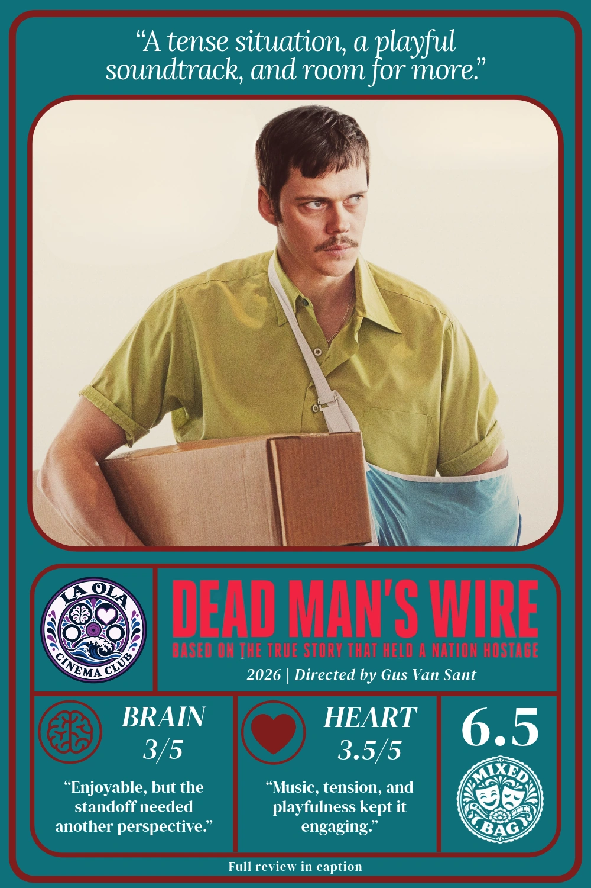

La Ola Cinema Club
From the collection
Dead Man’s Wire
“A tense situation, a playful soundtrack, and room for more”
Dead Man’s Wire finds an entertaining rhythm inside a serious situation. The tension is there, but so are moments of playfulness and unexpected relaxation. The music carries a lot of that contrast, giving a movie built around one hostage standoff more personality than the setup might suggest.
The lead performance keeps it compelling. There’s something interesting about watching someone who feels unstable without seeming eager to become a killer. That uncertainty makes him sympathetic enough to follow, even as the situation gets further out of hand.
The radio DJ is another standout, and the reporter’s storyline adds welcome depth beyond the immediate confrontation. Those different angles help keep the movie engaging. It never became boring, but they also hint at how much more there might have been to explore.
That’s the main frustration: the film stays so close to the standoff that the life surrounding it can feel just out of reach. More of what brought him there—how he felt screwed over, pieces of his past, another perspective—could have given the story greater range. Staying tightly focused is an interesting choice; it just leaves you wanting another layer.
The real footage afterward makes the portrayal feel especially convincing. It’s an unbelievable story, carried by strong performances and a soundtrack that knows how to play against the tension. An enjoyable watch, with enough going for it to make you wish it had opened its world a little wider.
From the Brain
Enjoyable, but the standoff needed another perspective
From the Heart
Music, tension, and playfulness kept it engaging

Mixed BagThings we enjoyed alongside things that did not quite come together.